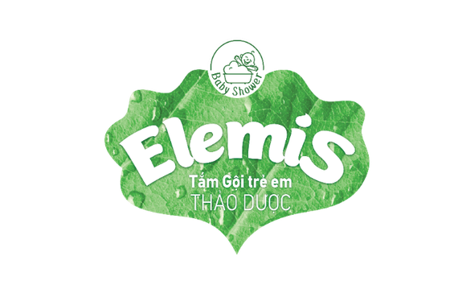
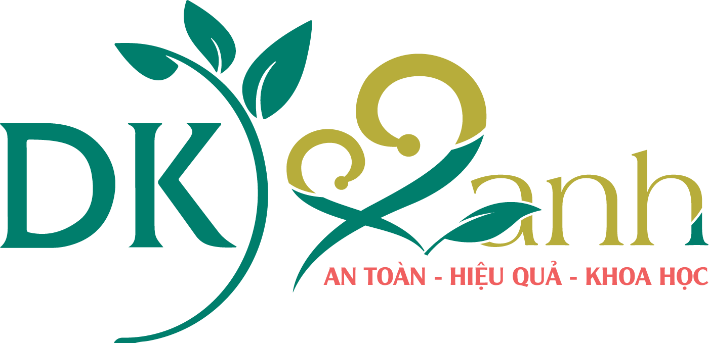
Đỏ, rát ở vùng mặc tã do nước tiểu và phân, hoặc trong các ngấn do mồ hôi đọng và da cọ vào nhau.
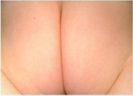
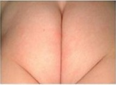
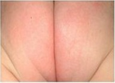
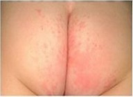
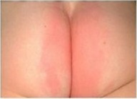
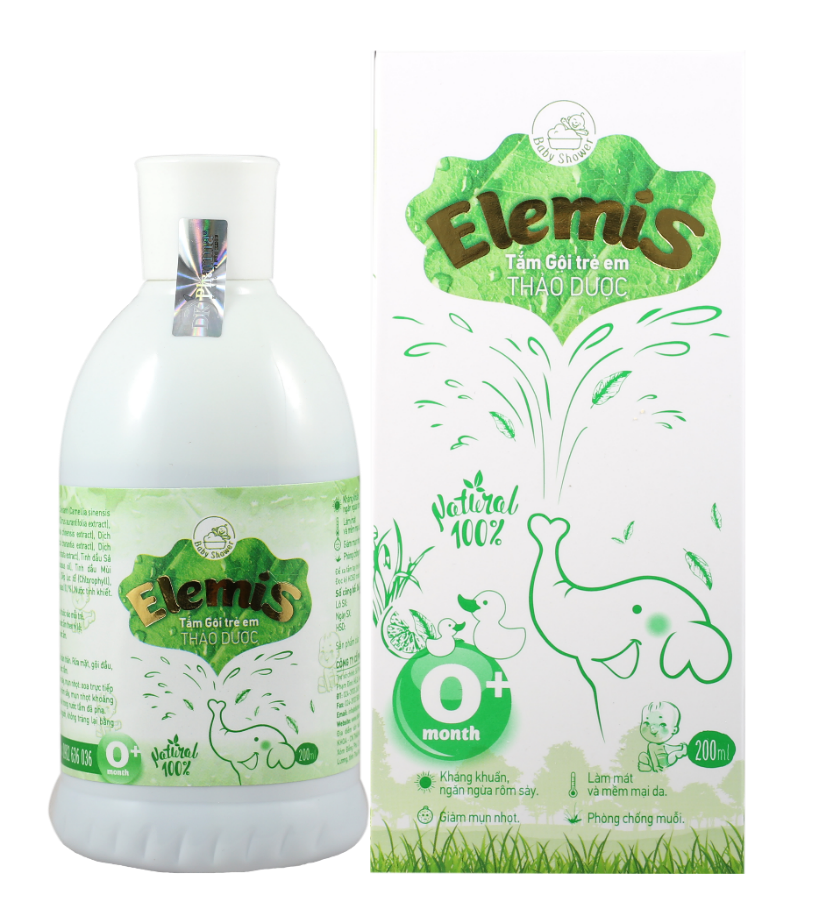
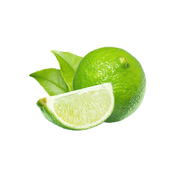
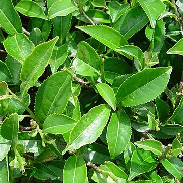
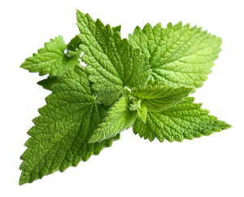
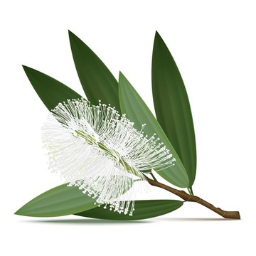
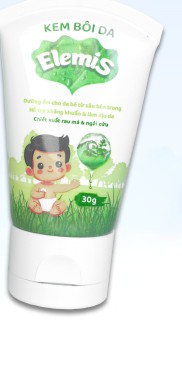
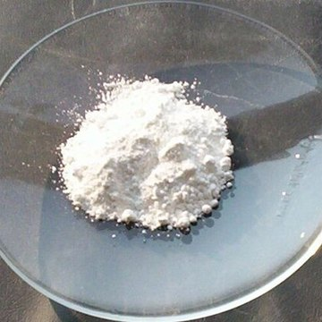
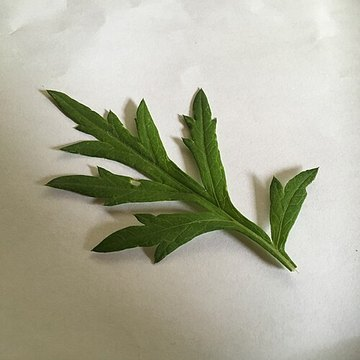
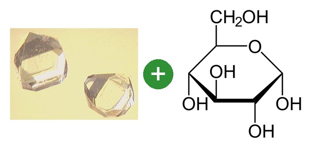
Aquaxyl: làm từ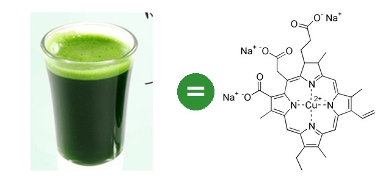
Diệp lục tố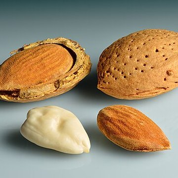
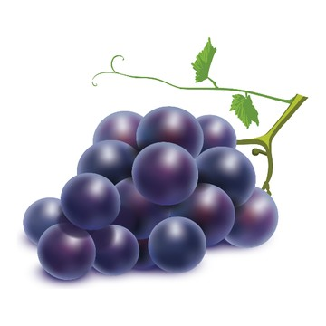
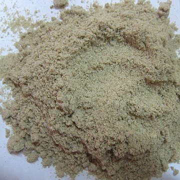
Da đã trợt, chảy dịch, có mụn mủ, mùi hôi rõ hoặc lan rộng nhanh.
→ Khuyên mẹ đưa bé đi khám trước, dùng sản phẩm duy trì sau.